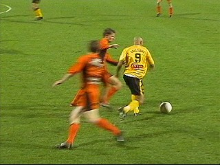
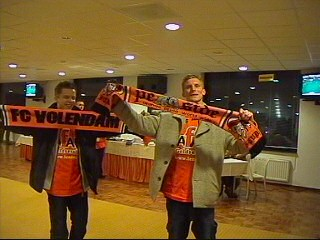

|
Roda JC - FC Volendam (1-0) 20 februari 2004 |
Ioannis Anastasiou neemt voor aanvang van de
wedstrijd afscheid van het Roda-publiek.
Hallo Henk, hallo Iris....
En nog een bekende; Erwin Koeman maakt vast
notities voor PSV-Roda.
Het leegste gastenvak sinds Roda-Fortuna!

Cristiano met nu nog gladdere coup.
Sergio en Van Dijk bereiden zich voor op een
ingooi van Senden.
Het massale overwicht van Roda resulteerde in
geen enkel doelpunt tijdens de eerste helft.

Enkele evv Volendam-supporters.
Een blik vanaf de vertrouwde zuidtribune op de
wedstrijd: Cristiano kopt 1-0 binnen uit een door
Van Hoogdalem verlengde hoekschop (60').
Jool = jool.
Pe had een ongeluk gehad bij het trimmen van
zijn neusharen....

Zoals zo vaak raakt Roda ook nu weer volledig
de grip kwijt op de wedstrijd na een voorsprong.
De hachelijke momenten voor Kujovic's doel
stapelden zich op.
Sonko met een verdienstelijke rentree in het
eerste elftal.
Met veel moeite houdt Roda de 1-0 vast. Een
bescheiden bedankje aan het publiek kan er nog
net vanaf.
Carnaval nadert; enkele supporters kwamen
vanavond in fastelaoves-kleijer.
In de KO met v.l.n.r. David, Marco, Henk.
Sonko en Kujovic bezochten vanavond de K.O.
De KVM-supporters zijn inmiddels niet meer
weg te denken uit het PLS. Aan het slot van de
avond werd het "We hate Racing M." ingezet.
Na deze schamele overwinning stijgt Roda JC
naar de 5e plaats!
© Koempels
Pleasure Dome